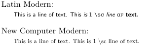

Contents
Summary
Settings
Description
Note that \usefontpath, by itself, is not enough to use additional fonts: a typescript file is required to use these additional fonts. The example below benefits from the fact that, while ConTeXt does not itself provide the desired fonts, it does provide a typescript file for these fonts.
Examples
Example using New Computer Modern fonts
-
\usefontpath [NCMS] \definestartstop [NCMSsmallprint] [before=\startnarrower, after=\stopnarrower, style=\switchtobodyfont[newcomputermodern,small,ss]] \definestartstop [SmallPrint] [before=\startnarrower, after=\stopnarrower, style=\switchtobodyfont[small,ss]] \usebodyfont [newcomputermodern] \setupbodyfont [modern] \startTEXpage Latin Modern: \startSmallPrint This is a line of text. {\sc This {\it is} 1 \tex{sc} {\em line} {\tt of} {\bf text.}} \stopSmallPrint \blank New Computer Modern: \startNCMSsmallprint This is a line of text. {\sc This {\it is} 1 \tex{sc} {\em line} {\tt of} {\bf text.}} \stopNCMSsmallprint \stopTEXpage
-

(This example is based upon an answer by Wolfgang in the ConTeXt users' mailing list on 2026/10/18.)
Note that this example does NOT work in the wiki! To test this on your system, create the directory NCMS and populate it with (at least) the files NewCMMono10-Regular.otf, NewCMSans10-Bold.otf, NewCMSans10-BoldOblique.otf, NewCMSans10-Oblique.otf, and NewCMSans10-Regular.otf, which can be obtained many places, including https://download.gnu.org.ua/release/newcm/newcm-8.1.1.txz.
Further note that if you are using TeXlive, as opposed to the ConTeXt stand-alone distribution, then you already have the New Computer Modern files in one of ConTeXt's cached directories, and the example should work without creating the NCMS directory.
Notes
- By Zsd on 2026-10-18T20:22:38+0000 :
- The font files must be in the specified directory (or one of the specified directories). They will not be found if they are only found in a subdirectory of some specified directory.